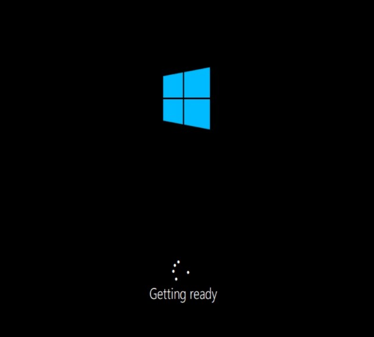
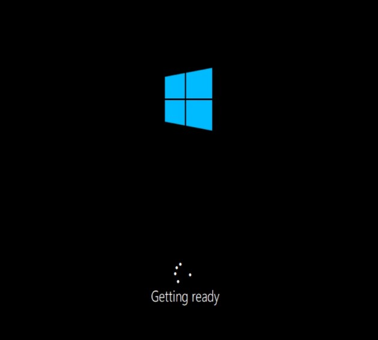

Instalação do Windows - Passo a Passo
Este processo é igual para qualquer instalação, seja ela pelo Virtual Box ou não. Caso queria mais informações de como utilizar o Virtual Box CLIQUE AQUI
Clicar em Instalar Agora
Se tiver a licença, adicionar
 

Aguardar a inicialização
Após esta parte, podemos aceitar ou não configurações de localização, relatório e outras personalizações
Parte final, após isto o Windows estará pronto a ser utilizado.